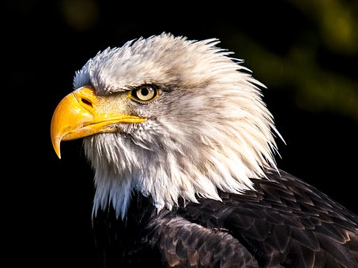

AVES:

HISTORIA DEL AGUILA
Águila es el nombre dado a las mayores aves depredadoras. Las diversas especies
y subespecies de águilas pueden encontrarse en casi cualquier parte del mundo excepto en la Antártida. Son miembros de las aves de presa,
del orden de Accipitriformes,1 (o Falconiformes acorde a una clasificación anterior),familia Accipitridae, subfamilia Buteoninae.
Pertenecen a varios géneros, los cuales están sujetos a una reclasificación más adecuada puesto que los expertos no llegan a una opinión
consensuada. Las águilas se caracterizan principalmente por su gran tamaño,constitución robusta, cabeza y pico pesados.
El águila ha constituido el símbolo de la majestad, el poder y la victoria a lo largo de la historia.En el lenguaje hieroglífico designaba
las ciudades de Heliópolis, Emeso, Antioquía y Tiro. Los persas y los epirenses la tomaron los primeros por insignia militar y
posteriormente fue el emblema de la república romana y de los emperadores de Oriente y de Occidente.
El águila era una figura que se ponía como atributo en los capiteles de los templos de Júpiter.3

HISTORIA DEL COLIBRI
A menudo el nido es construido en un arbusto de poca altura. La hembra pone dos huevos en un período de dos días y los empolla durante
14 a 19 días. Luego, los colibríes alimentan a sus crías durante unas tres a cuatro semanas.
La hembra va al nido en este tiempo hasta 140 veces al día para alimentar a sus crías.
Los colibríes (Trochilidae), también conocidos como picaflores, zumbadores, tucusitos, pájaros mosca, ermitaños o quindes,
son un conjunto de aves apodiformes endémicas de América que cuenta con más de 300 especies.
Son unas minúsculas aves americanas que se caracterizan por el colorido de su plumaje, su forma de ...

HISTORIA DE LA PALOMA
Una paloma blanca, con una rama de olivo en el pico. Reconocida como símbolo de paz tras las guerras del siglo XX.
Esta paloma es de origen bíblico. Aparece por primera vez en el relato del Arca de Noé,
siendo la encargada de ver cuál era el estado del mundo tras el diluvio universal.
La paloma (Columba livia), es una ave perteneciente a la familia de las columbiformes muy conocida en el mundo entero.
El lugar donde viven las palomas puede ser desde un campo, la ciudad o como mascotas en un hogar. Tienen un cuerpo robusto,
un pico corto y delgado con sus ceras carnosas, las hay de diferentes colores como grises,
blancas, café o bien con diferentes colores en sus plumas.